Вадим Горбачев
команда VK calls
TBD
- что такое webrtc
- топологии звонков
- из чего состоит видео (кадры опорники)
- кодеки (h.264, vp9, av1)
- webcodecs
- особенности safari
- функциональность звонков
- захват видео/аудио
- установка соединения
- передача данных
TBD схема с сигналингом STUN TURN и пр.
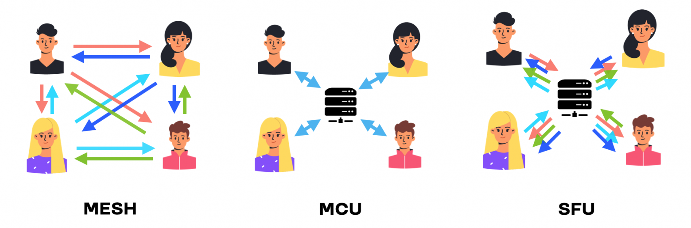
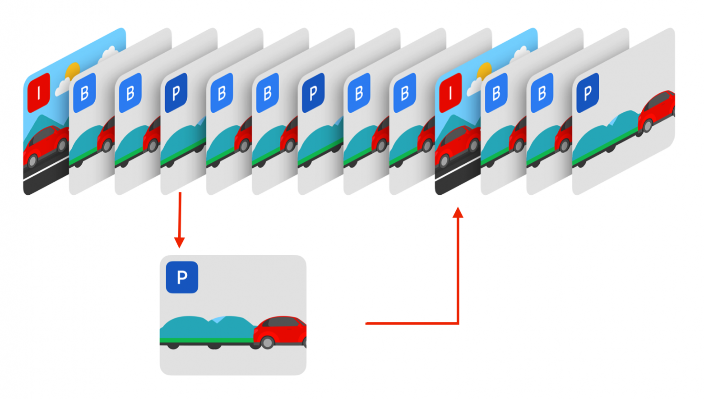
TBD график с производительность/качество 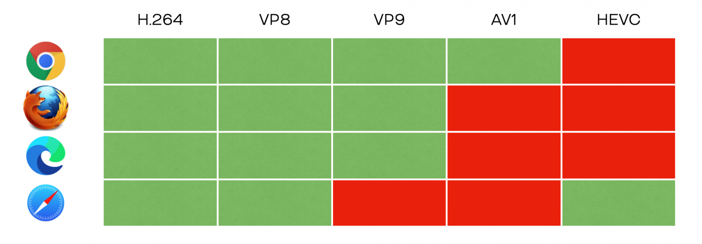
TBD краткое описание API
TBD про боль и про репутацию
- аудио, видео, скриншара
- грид, оратор, колбаса, свернутый звонок
- режим админа, поднятие руки
- трансляции
- браузеры не выдерживают больше 50 видео.
- слишком большая нагрузка на сеть
- страдающая анимация
- частные перерисовки (так как много активности)
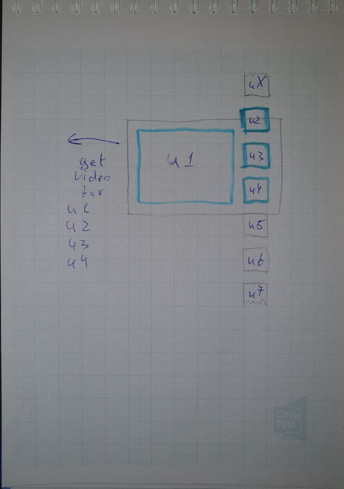
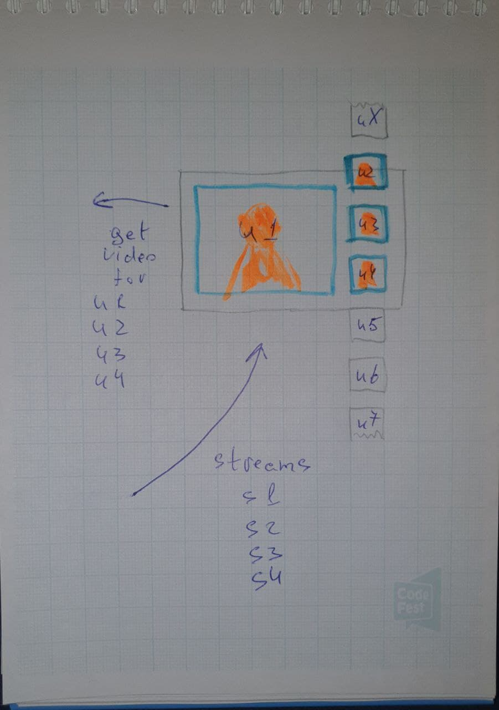
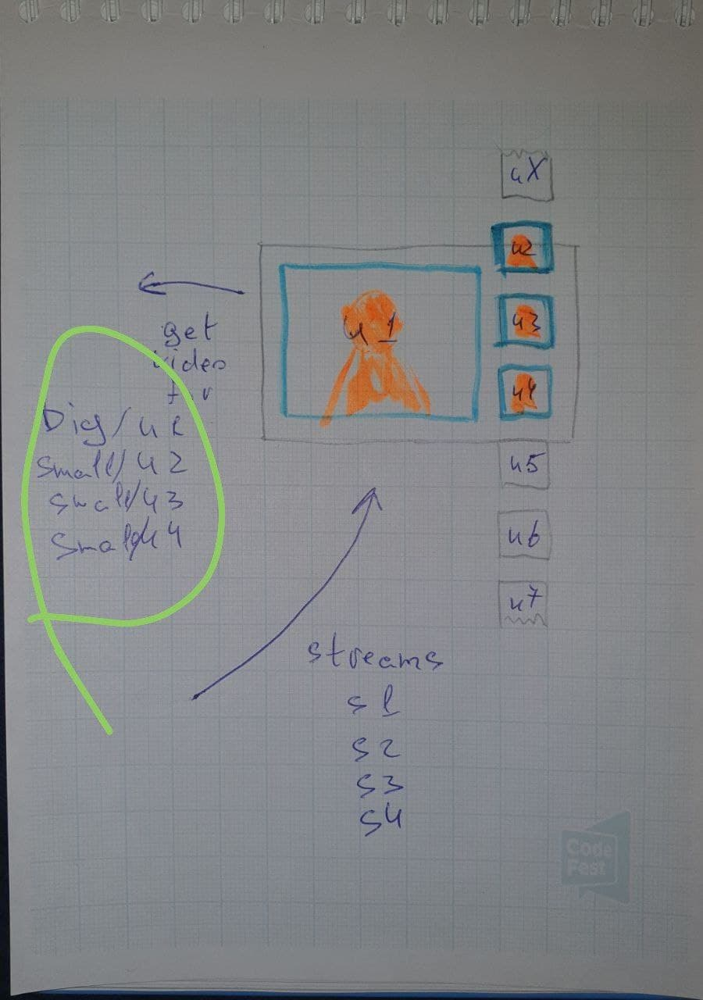
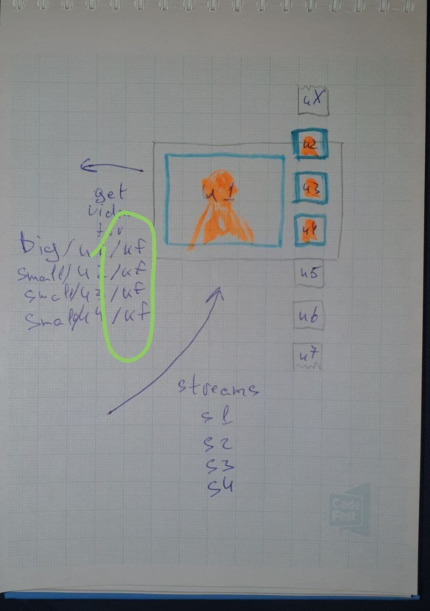
оптимизированный звонок на 100
[TBD] две картинки сравнения + сравнение по ресурсам сети, CPU
- Отсутсвие индикации плохой сети
- данные по сигналингу и стримы не всегда приходят синхронно
- некоторые анимированные отрисовки сильно тормозили
- при запросе видео с сервера, оно могло приходить очень долго в плоть до 10 секунд
- "мылилась" скриншара
[TODO] узнать про плохую сеть, как определяется
[TBD] картинка с рассинхроном зеленой рамки и говорения 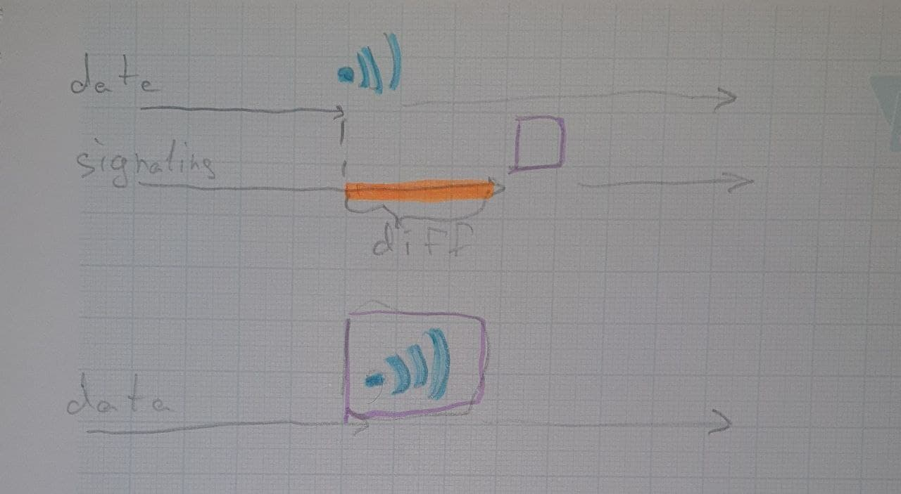
[TBD] картинка с блюром и графиками перформанса
[TBD] после переписывания на градиент
[TBD] стоит ли про это рассказывать? Если да, поспрашивать Колю как работает

[TBD] две картинки сравнения + сравнение по ресурсам сети, CPU
- выходили за лимит хрома по webMediaPalayer
- дорого рисовать 2000 карточек
- долго собирать данные о всех пользователях на старте
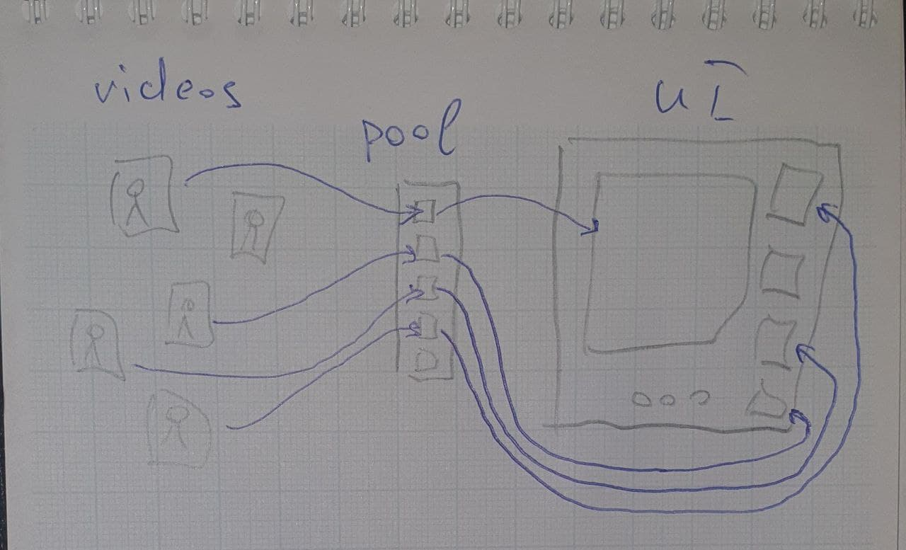
- на старте одно событие с слепком состояния звонка
- события идут через throttle/debounce
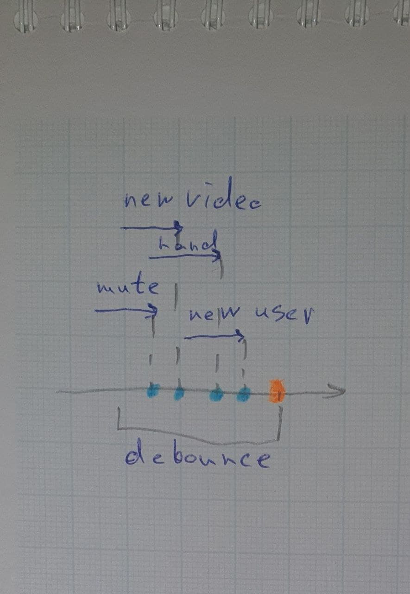
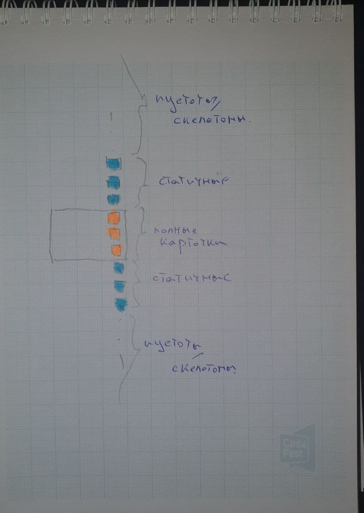
- список видимых карточек
- список имен кто говорит
- серверный поиск участников
+ итоги кульминации
видео с звонком на 6к
- экспериментируйте
- webrtc хорош для p2p, но с групповыми нужно будет повозиться
- берите на килент только те данные которые показываете именно сейчас
создание звонков больше напоминает gamedev нежели веб-разработку